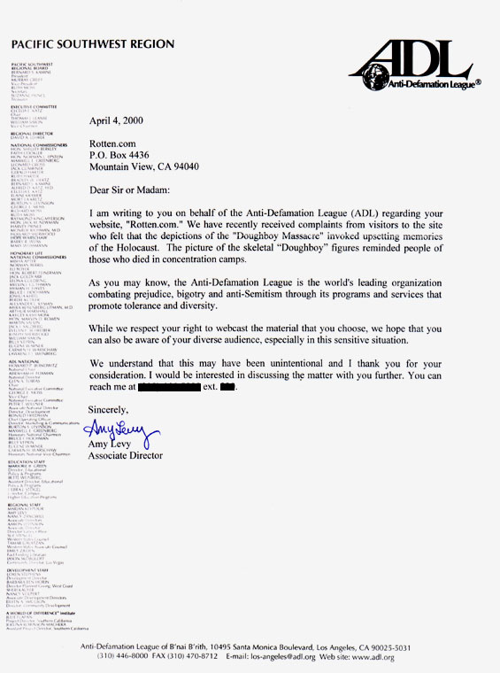

|
An archive of disturbing illustration
Because this picture reminds certain Jews of the Holocaust, they are demanding that we remove it. Suddenly anything that reminds Jews of the Holocaust, even things that have nothing to do with it, verboten? A high percentage of our staff is Jewish. After all rotten.com is part of the media conspiracy that Marlon Brando was kind enough to inform us about.  Part II. Conclusion
|